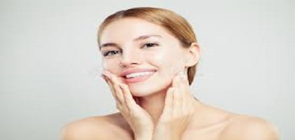
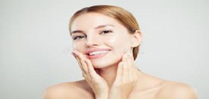

what is acne??
Acne is a skin condition that causes pimples or zits. Whiteheads, blackheads, and red, inflamed patches of skin may develop.
Alternative Names:
1.Acne vulgaris.
2.Cystic acne.
3.Pimples.
4.Zits
Causes of acne/pigmentation:
Acne occurs when tiny holes on the surface of the skin become clogged.These holes are called pores. Each pore opens to a follicle. A follicle contains a hair and an oil gland. The oil released by the gland helps remove old skin cells and keeps your skin soft.The glands can become blocked with a mixture or oil and skin cells, the blockage is called a plug or comedone. If the top of the plug is white, it is called a whitehead. It is called a blackhead if the top of the plug is dark.If bacteria become trapped in the plug, the body's immune system may react to it, causing pimples.Acne that is deep in your skin can cause hard, painful cysts. This is called nodulocystic acne.Acne - cystic on the chestAcne is most common in teenagers, but anyone can get acne, even babies. The problem tends to run in families.
Some things that may trigger acne include:
Hormonal changes that make the skin oilier. These may be related to puberty, menstrual periods, pregnancy, birth control pills, or stress.Greasy or oily cosmetic and hair products.Certain drugs (such as steroids, testosterone, estrogen, and phenytoin). Birth control devices, such as some drug-containing IUDs, can make acne worse.Heavy sweating and humidity.Excessively touching, resting on, or rubbing the skin.Research does not show that chocolate, nuts, and greasy foods cause acne. However, diets high in refined sugars or dairy products may be related to acne in some people, but this connection is controversial. SymptomsAcne commonly appears on the face and shoulders. It may also occur on the trunk, arms, legs, and buttocks.
Skin changes include:
Crusting of skin bumpsCystsPapules (small red bumps)Pustules (small red bumps containing white or yellow pus)Redness around the skin eruptionsScarring of the skinWhiteheadsBlackheadsBlackheads (comedones)Exams and TestsYour health care provider can diagnose acne by looking at your skin. Testing is not needed in most cases. Bacterial culture may be performed with certain patterns of acne or to rule out infection if large pus bumps persist. TreatmentSELF-CARE
Steps you can take to help your acne:
1.Clean your skin gently with a mild, nondrying soap (such as Dove, Neutrogena, Cetaphil, CeraVe, or Basics).
2.Look for water-based or "noncomedogenic" formulas for cosmetics and skin creams.(Noncomedogenic products have been tested and proven not to clog pores and cause acne in most people.)
3.Remove all dirt or make-up.
4.Wash once or twice a day, including after exercising.
5.Avoid scrubbing or repeated skin washing.
6.Shampoo your hair daily, especially if it is oily.
7.Comb or pull your hair back to keep the hair out of your face.
What NOT to do:
1.Try not to aggressively squeeze, scratch, pick, or rub the pimples.
2.This can lead to skin infections, slower healing, and scarring.
3.Avoid wearing tight headbands, baseball caps, and other hats.
4.Avoid touching your face with your hands or fingers.
5.Avoid greasy cosmetics or creams.
6.DO NOT leave make-up on overnight.
7.If these steps do not clear up the blemishes, try over-the-counter acne medicines that you apply to your skin.
8.Follow the directions carefully and apply these products sparingly.
9.These products may contain benzoyl peroxide, sulfur, resorcinol, adapalene, or salicylic acid.
10.They work by killing bacteria, drying up skin oils, or causing the top layer of your skin to peel.
11.They may cause redness, drying, or excessive peeling of the skin.
12.Be aware that benzoyl peroxide containing preparations can bleach or discolor towels and clothing.
13.A small amount of sun exposure may improve acne slightly, but tanning mostly hides the acne.
14.Too much exposure to sunlight or ultraviolet rays is not recommended because it increases the risk for wrinkles and skin cancer.
Treat your self naturally..
Home Remedies:
1.Exercise.
2.Use grape cleanser.
3.Use cucumber face mask.
4.Use cucumber face pack.
5.Use honey face mask.
6.Use Yeast and Yogurt Mask for Oily Skin.
7.Use Oatmeal Facial of oatmeal,milk,honey,lemon juice,turmeric powder
8.Drink buttermilk.
9.Add apple ciber vineger in your routine diet.
10.Eat bananas.
11.Eat raw almonds.
12.Eat jaggery.
13.Drink watermelon juice.
14.Massage your face by tea tree oil.
15.Never touching pimples.
16.Use row milk as clenser.
17.Use oil-free skincare.
18.Aloe vera juice or pulp will also help.
19.Massage your face by jojobac oil.
20.add green tea in routine diet.